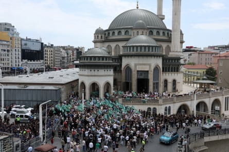

The Turkish president, Recep Tayyip Erdoğan , has condemned a cartoon in a satirical magazine as a “vile provocation” for appearing to depict the prophets Muhammad and Moses, amplifying an outcry by religious conservatives.
The cartoon, published a few days after the end of a 12-day conflict between Israel and Iran, appears to show Muhammad, Islam’s chief prophet, and Moses, one of Judaism’s most important prophets, shaking hands in the sky while missiles fly below in a wartime scene. Four cartoonists were arrested on Monday over the illustration.
It was criticised by religious conservatives and by Erdoğan’s ruling party, which called it an “Islamophobic hate crime,” even as the magazine that published it, LeMan, apologised to readers who felt offended and said the drawing had been misunderstood.
“We will not allow anyone to speak against our sacred values,” Erdoğan said in televised remarks, adding that the authorities would closely follow the legal process.
“Those who show disrespect to our prophet and other prophets will be held accountable before the law,” he said.
Erdoğan and his Islamic-rooted AK Party regularly criticise what they call Islamophobic acts in broadly secular Turkey and across Europe. Devout Muslims regard depictions of the prophet Muhammad as blasphemous.
In a statement on X, LeMan said: “The work does not refer to the Prophet Muhammad in any way.”
A crowd amasses in central Istanbul to protest against the cartoon published in LeMan magazine.Photograph: Dilara Senkaya/Reuters
The cartoonist, Dogan Pehlevan, had sought to highlight “the suffering of a Muslim man killed in Israeli attacks”, it said, adding there had been no intent to insult Islam or its prophet.
The magazine urged authorities to counter what it called a smear campaign, and to protect freedom of expression.
Several civil society groups condemned the detentions of the four cartoonists as a violation of freedom of thought and expression.
Turkey’s freedom of expression ranking is low, due to restrictions on media and public discourse. Reporters Without Borders ranked it 158th out of 180 countries in its 2024 Press Freedom Index.
More than 200 people rallied against LeMan in central Istanbul on Tuesday, despite a ban on gatherings and a heavy police presence.
One protester, public servant Muhammed Emin Necipsoy, said the magazine’s defence seemed insincere. “There is a subtle emphasis there on both the prophet [Muhammad] and the prophet Moses,” he said.
Turkey’s interior minister, Ali Yerlikaya, shared a video on X showing police officers detaining Pehlevan, with his hands cuffed behind his back as he was dragged up a flight of stairs.
He also shared videos of three other men being removed from their homes and put into vans, one of them barefoot.
“The individual who drew this vile image, D.P., has been apprehended and taken into custody. These shameless people will be held accountable before the law,” Yerlikaya wrote.
The Turkish government said an inquiry had been launched under a law that criminalises incitement to hatred and enmity.